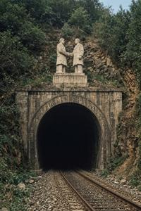

Zorzsin Tunnel
{kind=link}

Zorzsin Tunnel (Zgurian: Zorzsinski Tunel; Deglian: Zoržinski Tunel; Glagolitic: ⰈⰑⰓⰆⰊⰐⰔⰍⰊ ⰕⰖⰐⰅⰎ) is a destroyed railway tunnel under the Nexozsi Vrjexi mountains in Former Upper Pannonia.
The 12-kilometer tunnel, linking the People's Republic of Upper Pannonia (PRUP) with what was then a friendly Yugoslavia, was built jointly by Pannonians and Yugoslavs between 1957 and 1960. Severin Gowbka and Josip Broz Tito inaugurated it together in a lavish ceremony, dubbing it the Brotherhood of Peoples Tunnel. It ran through fissured, cavity-riddled karst limestone; geologists had warned of collapse risk in an earthquake, but their reports — declassified only after 1990 — were ignored given the project's political importance. The Zorzsin Tunnel became the only railway crossing of the Nexozsi Vrjexi; the range's few mountain roads, the sole alternative, were not always passable in winter. Traffic through the tunnel declined after PRUP–SFRY relations cooled in 1966, but continued until 1991.
In the summer of 1991, full-scale war broke out between Serbia and Croatia as Yugoslavia disintegrated. Upper Pannonia, itself mired in political crisis and sliding toward its own breakup and civil war, was still unified at the time. Both Zgurians and Deglians sympathized with the Croats, a solidarity rooted in shared Catholic identity and Austro-Hungarian heritage. When Yugoslavia broke apart, the tunnel's southern entrance ended up on Croatian territory, close to the fighting between Croatian forces and Serbs from the unrecognized Republic of Serbian Krajina. Shortly after Croatia declared independence — which Upper Pannonia was among the first states to recognize — the two governments signed a secret arms-supply agreement; Upper Pannonia had weapons to spare after years of militarization under the latter half of Gowbka's rule.
The arrangement did not stay secret from Belgrade. The Yugoslav People's Army's general staff had held precise geological surveys of the tunnel ever since its construction. On the night of 28 August, a squad of Serb saboteurs, nominally under the command of the Army of Serbian Krajina, seized the southern entrance, catching the small Croatian border garrison off guard and killing them. Engineers moved into the tunnel and swiftly laid charges — they knew exactly where to place them. The blast triggered a cascading collapse that brought down several kilometers of the tunnel.
No train was passing through at the time, and aside from the border guards, no one died. But the tunnel's destruction had far-reaching consequences. It cut off the export of Pannonian weapons to Croatia, probably giving the Serbs a temporary advantage in the battle of Vukovar. It certainly affected the Pannonian civil war that would erupt the following year: first, Zgurians and Deglians were left holding vast arms stockpiles no longer being drained by export; second, a wholly unrelated, accidental factor came into play.
The collapse of such a huge mass of rock triggered a small local earthquake. On the morning of 28 August, the tremor reached the mountain resort of Zorzsinski Dubri, where Ljubovan Jazvjec — former head of the Vronovica city committee of the Communist Party, now leader of the Movement for the Defense of Zgurians — was spending his last days of vacation before the opening of the Legislative Assembly session. The first jolt knocked a picture askew on the wall. Jazvjec, a perfectionist by nature and a short man, climbed onto a wobbly stool to straighten it. A second tremor knocked him to the floor. He struck his head on the corner of the bed; the blow fractured his skull and killed him instantly in front of his wife. The loss of a leader who had been experienced and comparatively moderate touched off unrest within the party, radicalizing it and elevating young activists blooded in street fighting and ready for violence. The country's slide toward civil war sharply accelerated.
Categories: Post-Socialist era, Socialist era, Underground objects